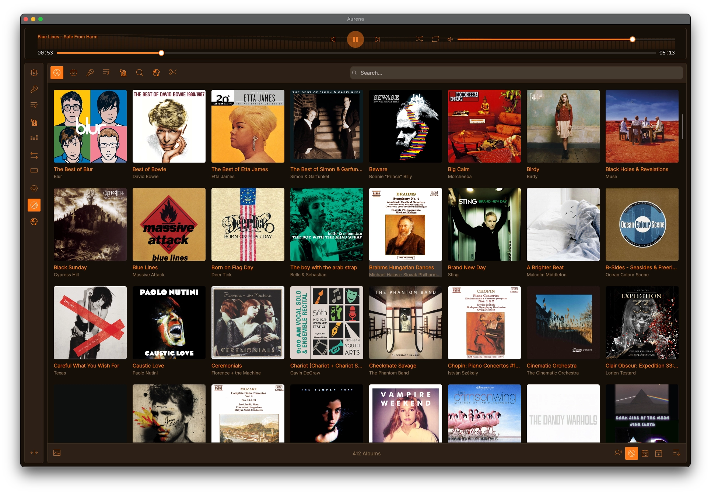
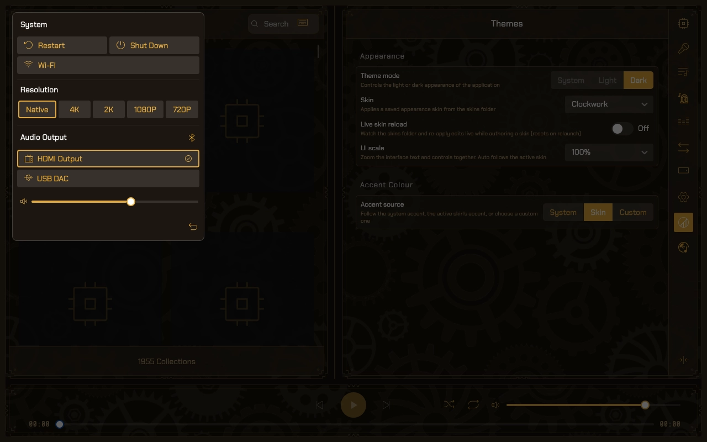
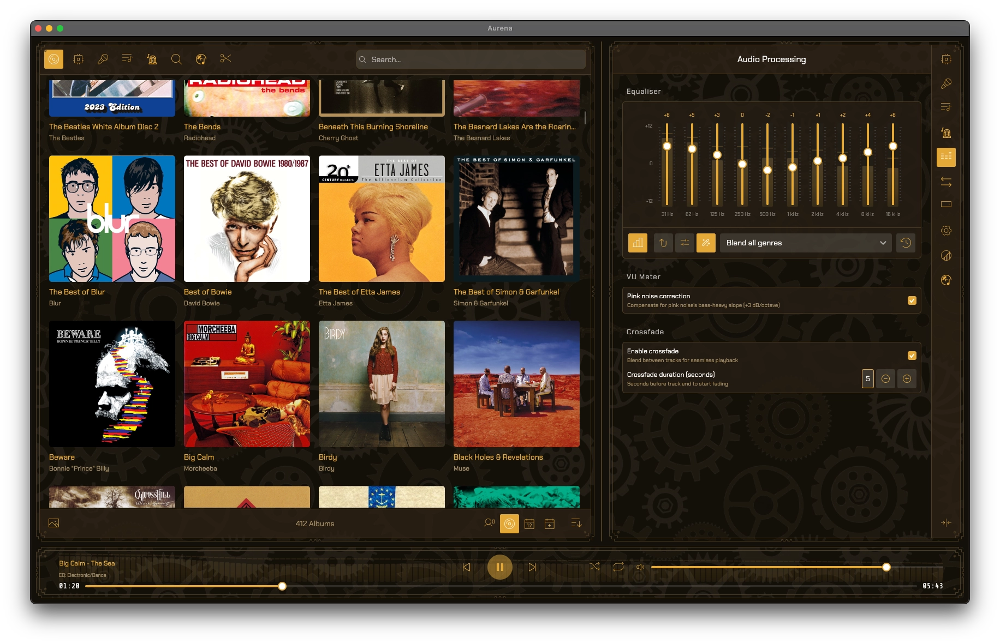
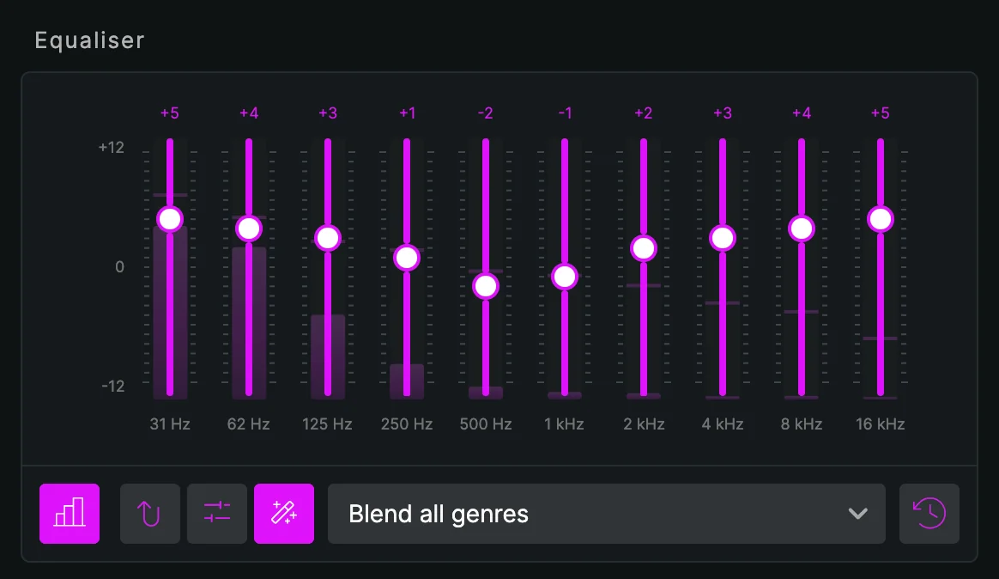
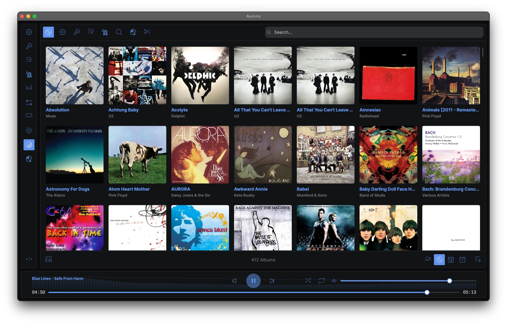
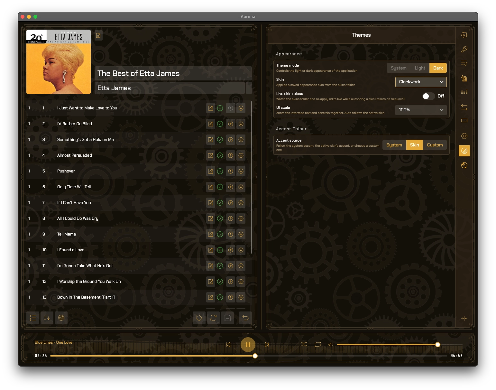
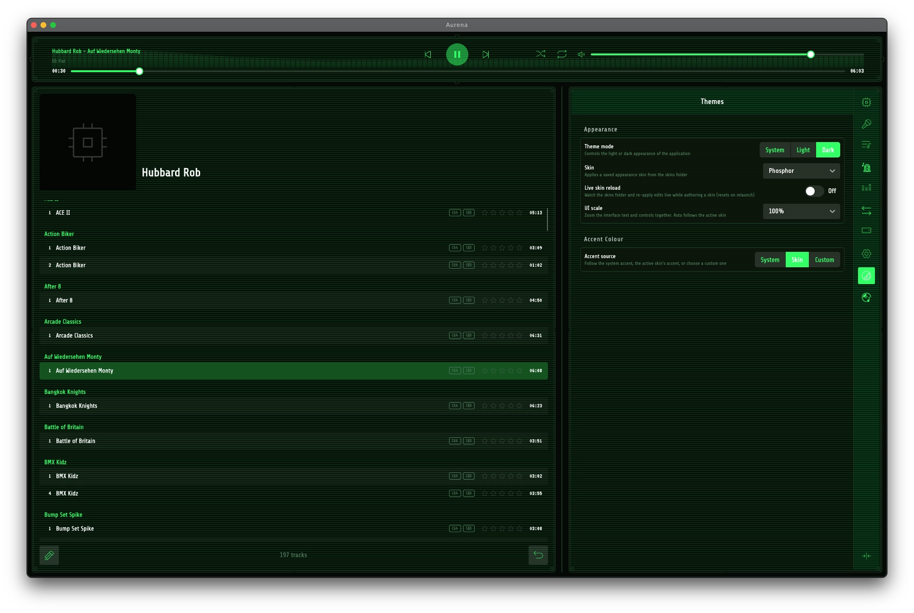
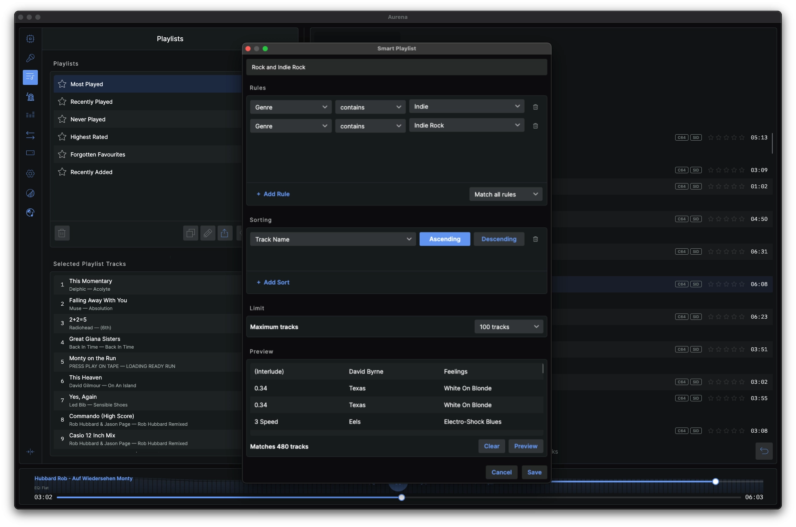
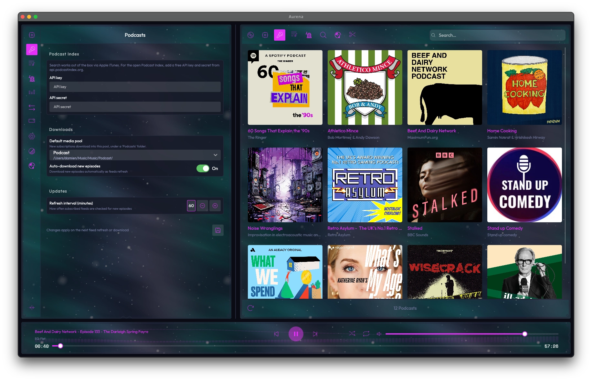

A modular music player and library manager for people who actually care about their collection — from lossless FLAC to Commodore 64 SID, on your desktop, your phone, and your hi-fi.

Not another streaming app. Aurena lives on your hardware, manages your files, and answers to nobody's recommendation engine. Your library never leaves your network.
Plenty of players nail some of these but Aurena aims to pull everything together inside of one easy to use and unified app. It streams, it tags, it plays chiptunes and makes your library available on all of your devices.
{{ p.body }}
Any one of these you can find elsewhere. All of them, working together, on hardware you own? That's Aurena.
Built for the Raspberry Pi 5 — turn an affordable single-board computer into a dedicated music system. It boots straight into Aurena, no desktop environment needed.
Connect to your amp via HDMI, analogue, or Bluetooth, then drive it from your TV's kiosk interface or remotely from a phone, tablet, or laptop. Living-room centrepiece or fully headless — your call.

A playback chain built on GStreamer and tuned for serious listening.
{{ f.title }} — {{ f.body }}

Drag the bands live, pick a preset — or switch on Auto mode and let Aurena read the genres of what's playing and resolve the curve for you on every track change.
A big alias table maps "shoegaze", "madchester", "techno" and hundreds more to tuned curves. When a track spans genres, you choose how the curves blend.

{{ f.title }} — {{ f.body }}

{{ f.title }} — {{ f.body }}

The killer detail: every other tagger writes into your files and crosses its fingers. Aurena keeps your corrections in a sidecar so they outlive any future re-tag or re-rip.
Real emulation · real formats · first-class citizens
{{ f.title }} — {{ f.body }}

{{ f.title }} — {{ f.body }}
AI playlists generate from the actual sound of your tracks — ask in plain English. Runs against a local Ollama server (fully private) or Google Gemini — your choice.

A built-in web UI, real-time desktop ⇄ web sync, and a Subsonic-compatible server — point Symfonium, DSub or Ultrasonic at it and stream the library you already own. Everything stays on your hardware.
Throwing a party? Guests queue tracks from their own phones — they sign in with a name, and per-user cooldowns stop anyone hogging the decks. There's a dedicated "now playing" view for the room.
http://your-machine.local:8989

{{ f.title }} — {{ f.body }}
{{ f.body }}
{{ pf.body }}
Under the hood
Aurena is free. It's local-first. And it's built for people who give a damn about their collection.
Found a bug or have an idea? Feedback directly shapes where Aurena goes next.